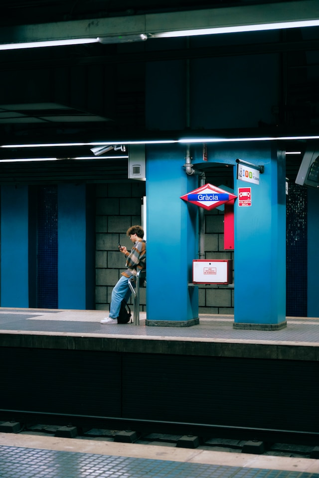

#1
#2

#3
#4
#5
#6
O código
Owl Carousel configurado com autoplay e autoplayTimeout de 2s.
Usei a lib Mutation Summary pra facilitar o uso da Mutation Observer API, e observei a mudança de classes nos dots. Customizei duas novas classes, .storie__past e .storie__next, para controlar os estilos. Usei uma operação simples de forEach e slice para ajustar as classes com base no item ativo, adicionei uma animação de 2s no item ativo, e ficou pronto o sorvetinho!
Ignorei o span que fica dentro do .owl-dot e formatei direto a classe owl-dots, brincando com flex e flex-grow para os dots preencherem todo o espaço.
Visual inspirado nos stories do Google Notícias da versão mobile.